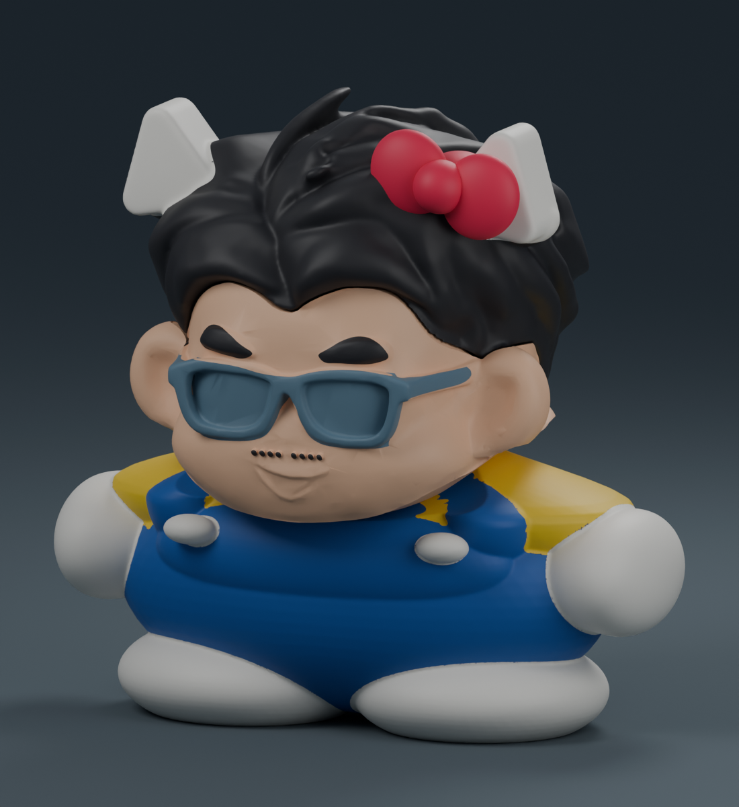
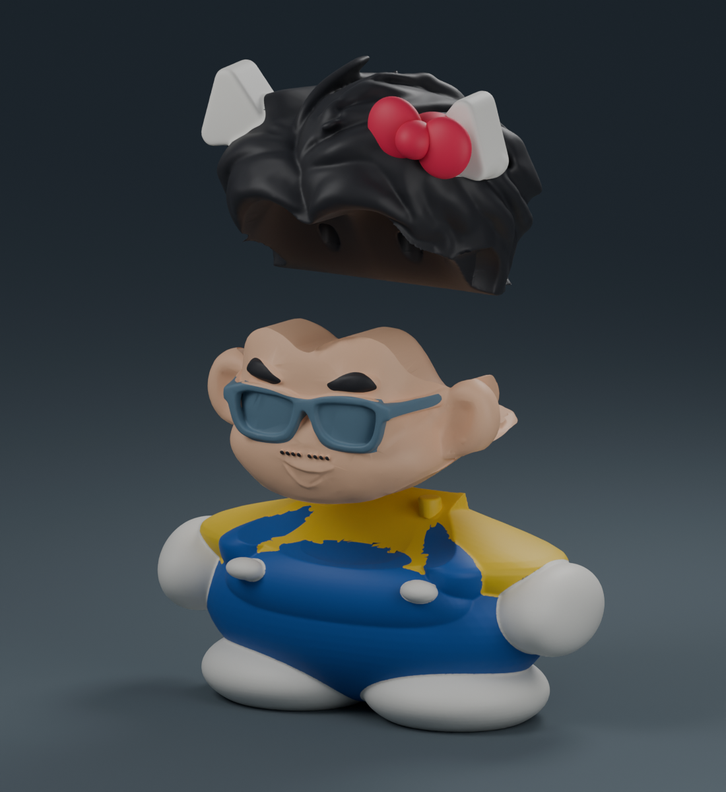
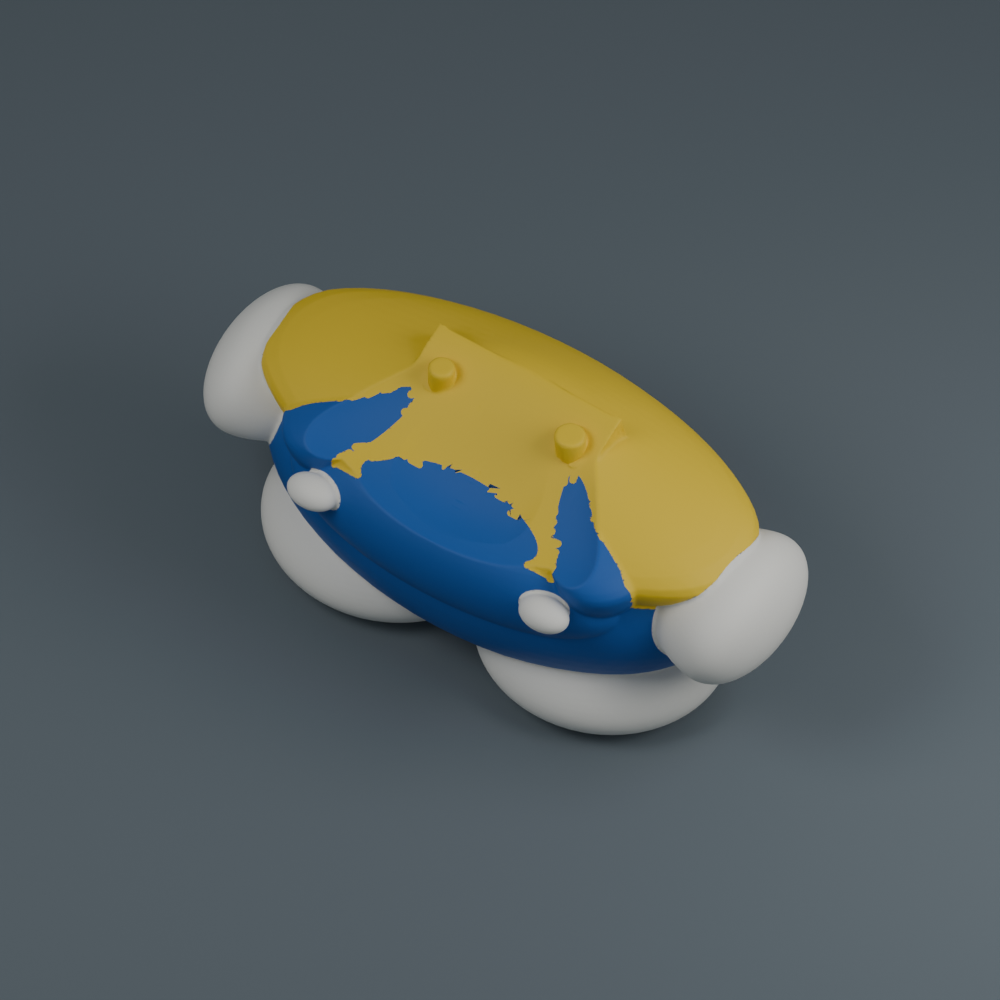
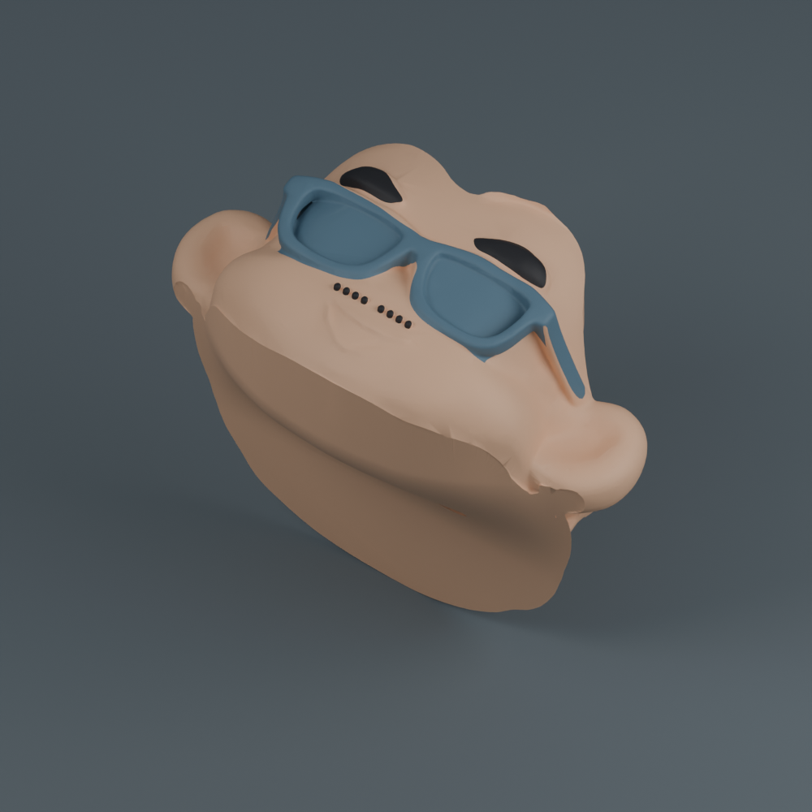
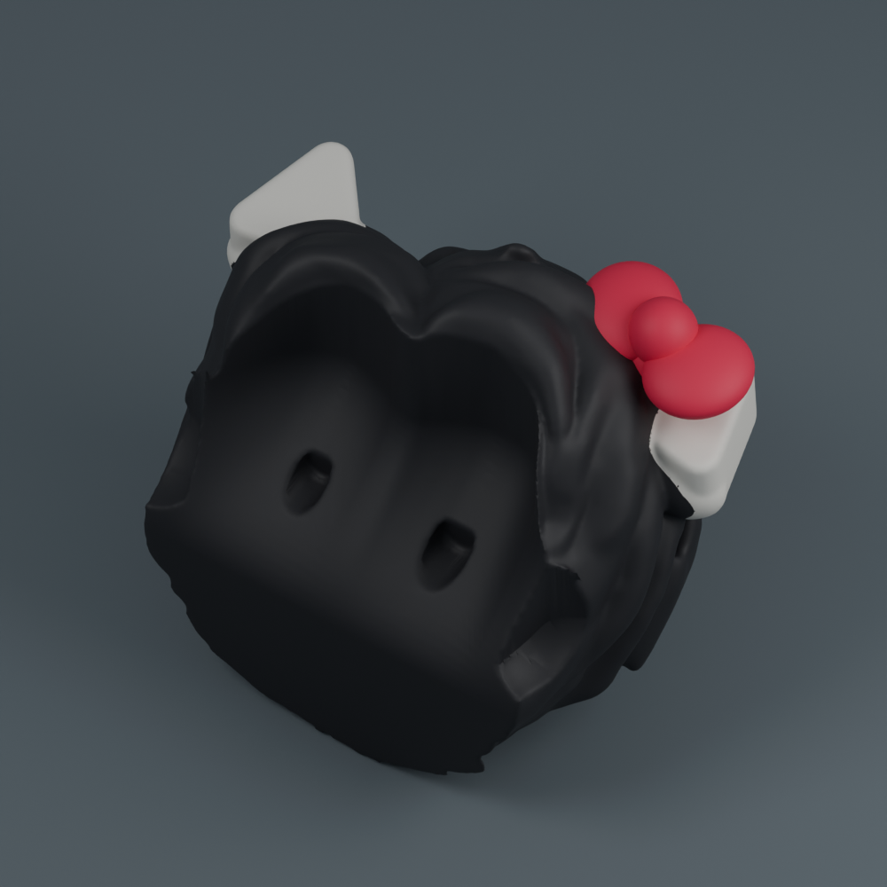
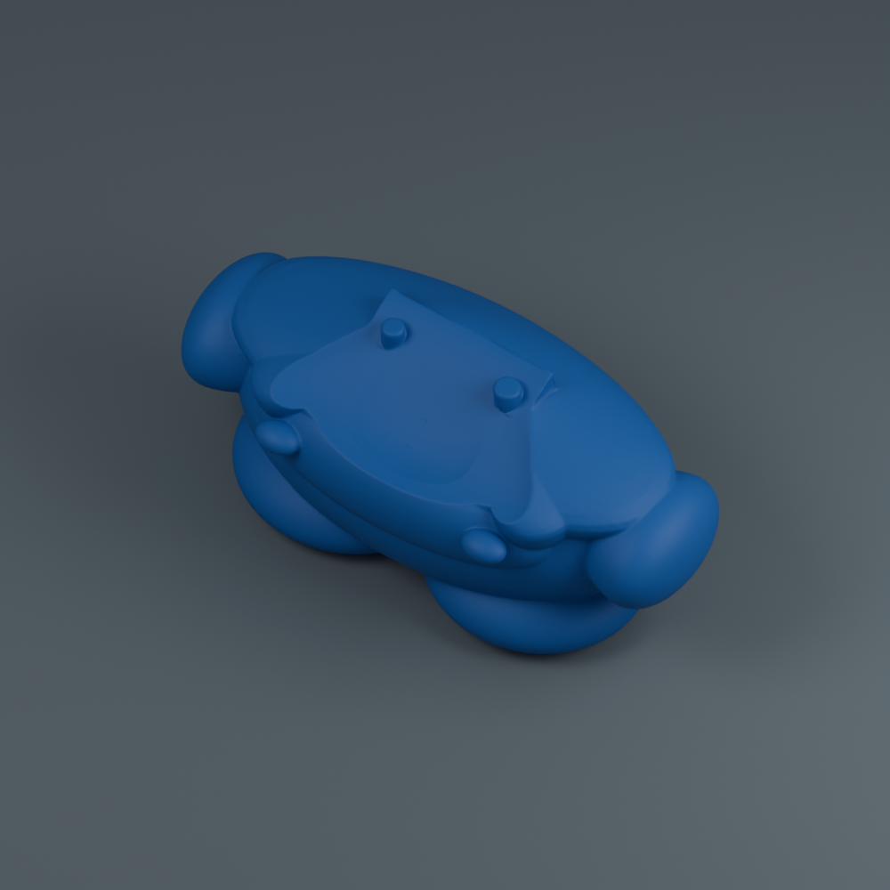
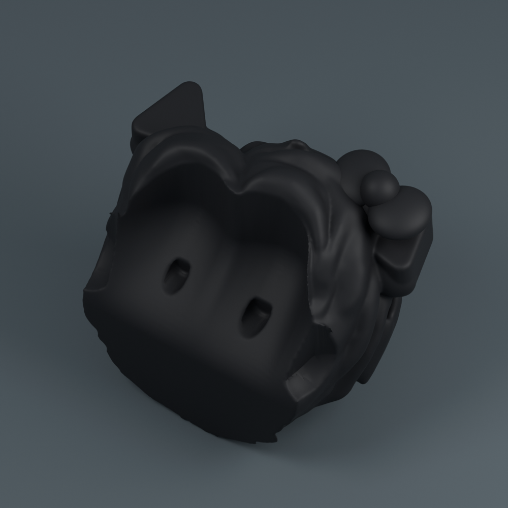

← 返回作品總覽Hello Kitty 小陳晉。
新版保留黑髮與融合貓耳，補上立體紅色蝴蝶結；沒有白色帽子。
寬身融合新版：軀幹寬 84.9 mm，頭寬 71.8 mm。白色貓耳根部加寬並修圓，融入黑髮；請勿混用舊版組裝件。
黑色頭髮加白色貓耳、黃上衣與藍吊帶裝，保留熟悉的臉。高約 10 公分，三件組裝。

原配色的實際模型渲染。省時版需自行補色，圖片不代表單色檔會自動呈現多色。
身體 → 臉 → 黑髮與貓耳。既有的原色三件版臉部可沿用。選一種列印方式
保留原配色：01＋02＋03，約 32 小時 53 分。三張盤都需要多色列印與擦料塔。
省時、自己補色：04＋02＋05，約 13 小時 12 分。身體與頭髮與貓耳單色印出；只有臉盤換色。
已有臉部時，單印 04＋05 約 6 小時 8 分。每個零件只選一種版本即可。
模型下載

吊帶裝與手腳_三色合印.3mf
白色手腳、藍色吊帶裝與黃色上衣，三色印成一件。
約 15 小時 2 分 · 271.25 g
下載 3MF
臉_原色三色合印.3mf
膚色臉、黑色眉毛與小鬍子、藍灰色眼鏡，三色印成一件。可沿用原色三件版的臉。
約 7 小時 4 分 · 116.54 g
下載 3MF
黑髮貓耳與蝴蝶結_三色合印.3mf
原本黑色頭髮與白色貓耳，黑白紅三色印成一件。
約 10 小時 47 分 · 179.41 g
下載 3MF
吊帶裝與手腳_省時單色版.3mf
取代 01：整件以藍色印出。白色手腳、鈕扣與黃色上衣需自行補色。
約 2 小時 48 分 · 42.85 g
下載 3MF
黑髮貓耳與蝴蝶結_省時單色版.3mf
取代 03：整件以黑色印出。白色貓耳需自行補色。
約 3 小時 20 分 · 42.03 g
下載 3MF組裝與列印
零件冷卻後拆除支撐並清理定位孔，臉對準身體定位榫向下放入，再將黑髮與貓耳向下放入。先試配，確認順暢再少量點膠。
範例設定：Bambu Lab X1 Carbon／0.4 mm／PLA／0.16 mm 層高。每張多色盤最多三種耗材，請按顏色對應自己的 AMS 槽位。時間含清料與支撐，不含換盤、清理、上色及組裝。
模型與五盤切片檢查已通過，尚未實體試印。圖片直接來自模型；列印方向圖未顯示支撐與擦料塔。